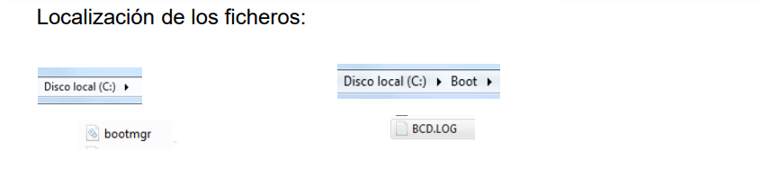
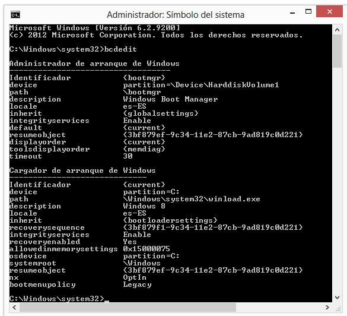
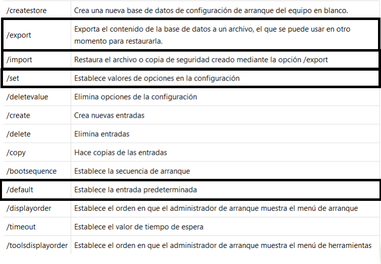

Arranque de Windows 10
Darío Pavón Mateo
Benjamín Masanneck Lama
Angel Jose Sabino Mesa
1º ASIR
Licencia Creativecommons

Ultimate Script v1.0
Theme by: reveal.js
Actual Pantalla de Carga de Windows.
En este momento, ya se ha leído el archivo Bootmgr y bcd.log
¿Qué veremos en este tema?
- Pequeño resumen Teórico
- Modificar el arranque
- Comandos de BCDedit
Boot Sequence

- MBR pasa el control a 'Bootmgr'.
- 'Bootmgr' lee el fichero 'BCD.log' en el directorio Boot.
- Se leen todos los Sistemas Operativos en las particiones activas.
Actualmente en Windows 10

Existe una copia de bootmgr en la partición reservada para el sistema.
Actualmente en Windows 10 el fichero 'bcd.log' ya no se puede editar con un editor de texto, es necesario 'bcdedit'
Modificar el Arranque

Desde BCDedit se pueden observar todos los campos que podemos editar.
¡Hay que tener mucho cuidado!
En la sección Administrador se muestra el sistema de arranque.
En la sección Cargador de arranque se muestran los sistemas operativos instalados.
Comenzamos nuestra primera práctica desarrollada por Darío
Los comandos señalados son los más importantes.
Comenzamos nuestra segunda práctica desarrollada por Sabino
Para esta práctica necesitaremos un programa llamado EASYBCD
Es necesario descargar BCDedit Link
Este programa nos permitirá modificar el archivo BCD.log desde una forma más gráfica.